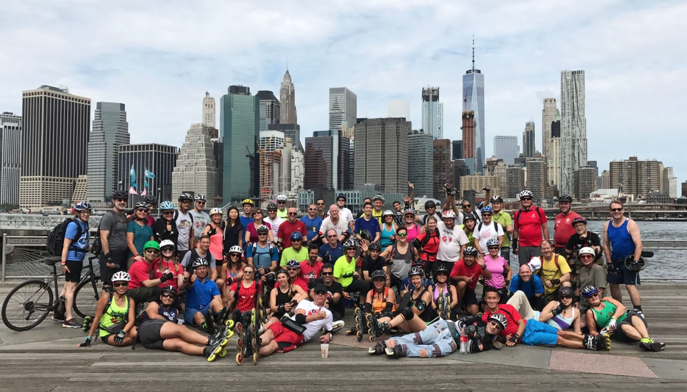

Görkorcsolya a városban
Nem ajánlom a zsúfolt helyen való görkorcsolyázást. Ha mégis ilyen utat választunk, akkor legyen sarokfék a görkorcsolyán, mivel azzal a legegyszerűbb fékezni és egy-két balesetet megelőzhetünk vele.



Nem ajánlom a zsúfolt helyen való görkorcsolyázást. Ha mégis ilyen utat választunk, akkor legyen sarokfék a görkorcsolyán, mivel azzal a legegyszerűbb fékezni és egy-két balesetet megelőzhetünk vele.